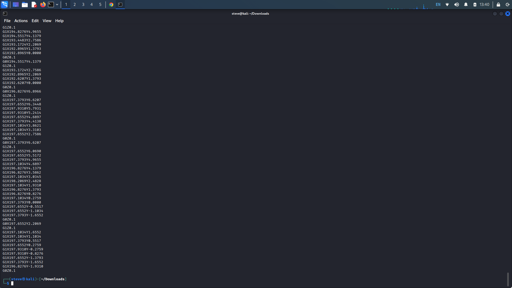
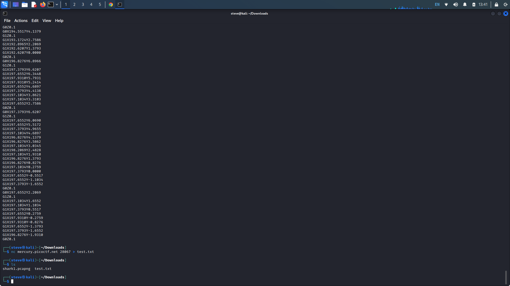
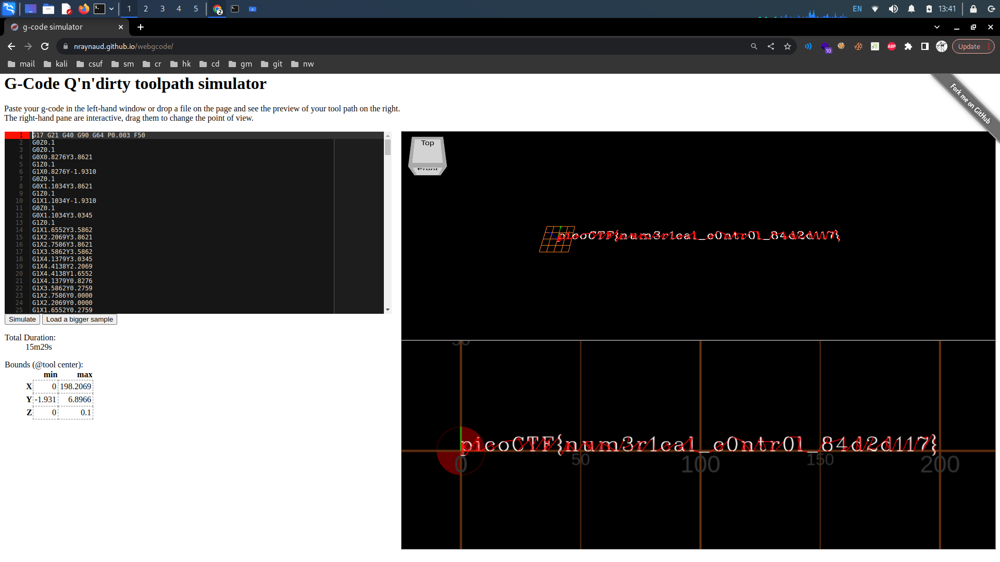

speeds and feeds
Description: There is something on my shop network running at nc mercury.picoctf.net
28067, but I can't tell what it is. Can you?
Writeup: Upon executing the Netcat command, we see a mountain of what looks to be g-code.
G-code is the primary language used by computer numerical control (CNC) machines.

We can probably copy the output to a g-code compiler to see what it would look like when used through a CNC machine. Execute the Netcat command again, this time, writing the output to a text file.

Using this g-code compiler site, we can input our text file and see what our output would look like when printed out. The output is our flag.
